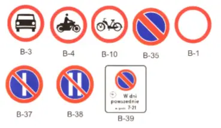

Szczególna ostrożność vs. ostrożność – analiza OSK Tailor Gdańsk

W skrócie: Szczególna ostrożność to, według Prawa o ruchu drogowym, ostrożność polegająca na zwiększeniu uwagi i dostosowaniu zachowania do zmieniających się warunków na drodze tak, by móc odpowiednio szybko zareagować. Przy omijaniu i wymijaniu zwykle wystarczy zwykła ostrożność, a wyprzedzanie zawsze wymaga szczególnej.
Zgodnie z Ustawę Prawo o ruchu drogowym [PrDrog] pojęcie „szczególna ostrożność” oznacza podwyższony stopień ostrożności, który uczestnicy ruchu drogowego muszą zachować w określonych sytuacja drogowych.
Nie chodzi tu jedynie o subiektywne „bycie bardziej ostrożnym” – przepisy wskazują wyraźnie, czym jest szczególna ostrożność i kiedy należy ją stosować.
Kiedy wystarczy „zwykła” ostrożność, a kiedy potrzebna jest szczególna ostrożność?
Zgodnie z Ustawą [PrDrog] uczestnicy ruchu i inne osoby znajdująca się na drodze są obowiązani zachować:
ostrożność albo gdy Ustawa [PrDrog] tego wymaga, szczególną ostrożność to znaczy unikać wszelkiego działania *), które:
- mogłoby spowodować zagrożenie bezpieczeństwa lub porządku ruchu drogowego,
- mogłoby ruch ten utrudnić albo
- w związku z ruchem zakłócić spokój lub porządek publiczny oraz narazić kogokolwiek na szkodę.
*) Przez działanie rozumie się również zaniechanie.
Kiedy ostrożność?
Zwykła ostrożność dotyczy wszystkich — zarówno uczestników ruchu, każdej osoby znajdującej się na drodze lub też poza nią. Oznacza to , że „zwykła” ostrożność dotyczy każdego bez wyjątku, zawsze i wszędzie w miejscach, o których wspomina Ustawa [PrDrog].
Kilka przykładów:
- ✅ Przykładowo, przejawem zachowania ostrożności przez kierującego pojazdem jest zredukowanie prędkości podczas przejeżdżania w pobliżu placu zabaw lub przez osiedla mieszkaniowego.
- ✅ Podobnie, osoba znajdująca się w pojeździe jako pasażer również powinna zachować ostrożność, na przykład podczas wysiadania z pojazdu.
Co do zasady, kierowca ma obowiązek zawsze prowadzić pojazd w sposób rozważny i ostrożny. Jednocześnie Ustawa [PrDrog] nie wskazuje wprost, akie konkretne zachowania należy uznać za przejaw zachowania ostrożności.
Kto ma zachować ostrożność?
Ustawa [PrDrog] obowiązuje do zachowania ostrożności:
- Wszystkich uczestników ruchu drogowego (kierujący pojazdem, pieszy czy osoba znajdująca się w pojeździe).
- Innych osób znajdujących się na drodze, poza uczestnikami ruchu (osoba wykonująca prace remontowe).
- Osóby znajdujących się poza drogą i w jej pobliżu a których zachowanie może mieć wpływ na ruch na drodze (dzieci na placu zabaw, osoba powodująca zadymianie poprzez np palenie liści).
Pojęcie szczególnej ostrożności
Szczególna ostrożność, zgodnie z art.2 ust. 22 [PrDrog] to ostrożność polegająca na zwiększeniu uwagi oraz dostosowaniu zachowania uczestnika ruchu do zmieniających się warunków i sytuacji na drodze, w stopniu umożliwiającym odpowiednio szybkie reagowanie.
W przeciwieństwie do zwykłej „ostrożności”, kodeks drogowy określa pojęcie ostrożności szczególnej oraz sposób zachowania, który stanowi jej przejaw.
Kiedy szczególna ostrożność?
Obowiązek zachowania szczególnej ostrożności dotyczy wyłącznie określonych osób w konkretnych sytuacjach drogowych.
Zarówno te osoby, jak i sytuacje, w których obowiązek ten występuje, zostały precyzyjnie wskazane w Ustawie [PrDrog].
Do zachowania szczególnej ostrożności obowiązuje kierującego pojazdem
- Każdy minięty drogowy pionowy znak ostrzegawczy.
- Migający lub stały sygnał żółty umieszczony na przeszkodzie albo migający sygnał żółty nadawany przez sygnalizator.
Kto i w jakich sytuacjach musi zachować szczególną ostrożność
A. Po pierwsze, kierujących pojazdem 🚘 podczas wykonywania manewrów:
- włączania się do ruchu, (art. 17 ust. 2 PrDrog)
- zmiany kierunku jazdy lub zajmowanego pasa ruchu, (art. 22 ust. 1 PrDrog)
- cofania, (art. 23 ust. 1 pkt 3 PrDrog)
- wyprzedzania, (art. 24 ust. 2 PrDrog)
- zbliżania się do skrzyżowania, (art. 25 ust. 1 PrDrog)
- przecinania się kierunków ruchu poza skrzyżowaniem, (art. 25 ust. 3 PrDrog)
- zbliżania się do przejścia dla pieszych, (art. 26 ust. 1 PrDrog)
- przejeżdżaniu obok oznakowanego przystanku tramwajowego lub przystanku przystanku innego pojazdu komunikacji publicznej nieznajdującego się przy chodniku, (art. 26 ust. 6 PrDrog)
- zbliżania się do przejazdu dla rowerzystów oraz skręcania w drogę poprzeczną, (art. 27 ust. 1 PrDrog)
- zbliżania się do przejazdu kolejowego lub tramwajowego oraz podczas przejeżdżania przez takie przejazdy, (art. 28 ust. 1 PrDrog) i (art. 28 ust. 6 PrDrog)
- jazdy w warunkach zmniejszonej przejrzystości powietrza, (art. 30 ust. 1 PrDrog)
- jazdy pojazdem uprzywilejowanym „w akcji” w sytuacji niestosowania się do przepisów ruchu drogowego dotyczących zatrzymania i postoju, oraz sygnałów drogowych, (art. 53 ust. 2 PrDrog)
- jazdy pojazdem wykonującym prace remontowe, modernizacyjne lub porządkowe w przypadku niestosowania się do przepisów dotyczących jazdy po jezdni, lub przy jej prawej krawędzi, oraz o zatrzymaniu i postoju, (art. 54 ust. 2 PrDrog)
- przejeżdżania obok pojazdu do nauki jazdy lub egzaminowania oznaczonego literą „L”. Poprzez „przejeżdżanie obok rozumie się wymijanie, omijanie tego pojazdu oraz jazdę za nim, (art. 55 ust. 3 PrDrog)
- omijaniu pojazdu przewożącego zorganizowaną grupę dzieci lub młodzieży w wieku do 18 lat w czasie ich wsiadania lub wysiadania, (art. 57 ust. 2 PrDrog)
- przejeżdżania obok autobusu szkolnego, (art. 57a ust. 1 PrDrog);
- omijania oznakowanego pojazdu przeznaczonego konstrukcyjnie do przewozu osób niepełnosprawnych, w czasie wsiadania lub wysiadania osoby niepełnosprawnej, (art. 58 ust. 2 PrDrog)
- prowadzenia pojazdu nienormatywnego.
B. Po drugie, pieszy🚶♂️podczas:
- przechodzenia przez torowisko,
- przechodzenia przez jezdnię.
C. Po trzecie, kierujący rowerem 🚴♂️ podczas:
- korzystania z drogi dla rowerów i pieszych, (art. 33 ust. 1 PrDrog)
- korzystania z chodnika lub drogi dla pieszych (art. 33 ust. 6 PrDrog).
D. Po czwarte, uprawniona osoba niepełnosprawna🧑🦼o obniżonej sprawności ruchowej:
- kierując pojazdem samochodowym oraz kierujący pojazdem przewożącym taką osobę w przypadku nie stosowania się do zakazów wyrażonych znakami: B-1 , B-3 , B-4 , B-10 , B-35 , B-37 , B-38 , B-39 .

Wnioski
- Podczas manewrów omijania i wymijania zazwyczaj wystarczy zachowanie zwykłej ostrożności, chyba że manewr dotyczy pojazdu egzaminacyjnego lub nauki jazdy oznaczonego znakiem L – w takim przypadku wymagana jest szczególna ostrożność.
- Natomiast wyprzedzanie zawsze wymaga zachowania szczególnej ostrożności.
- W przypadku przejeżdżania obok pojazdu uprzywilejowanego, nie jest konieczne zachowanie szczególnej ostrożności. Jednak kierujący takim pojazdem powinien ją zachować, szczególnie gdy nie stosuje się do przepisów dotyczących zatrzymania i postoju oraz do sygnałów drogowych.
- Dodatkowo, jazda w warunkach ograniczonej widoczności (np. mgła, opady deszczu lub śniegu) wymaga każdorazowo zachowania szczególnej ostrożności.
Opracowanie: OSK Tailor Nauka Jazdy Gdańsk
“Kurs prawa jazdy szyty dla Ciebie na miarę”
Zobacz pozostałe wpisy na blogu OSK Tailor
Przeczytaj też: Zasada prawej ręki na skrzyżowaniu.